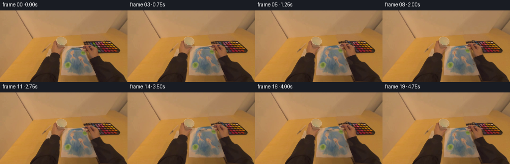
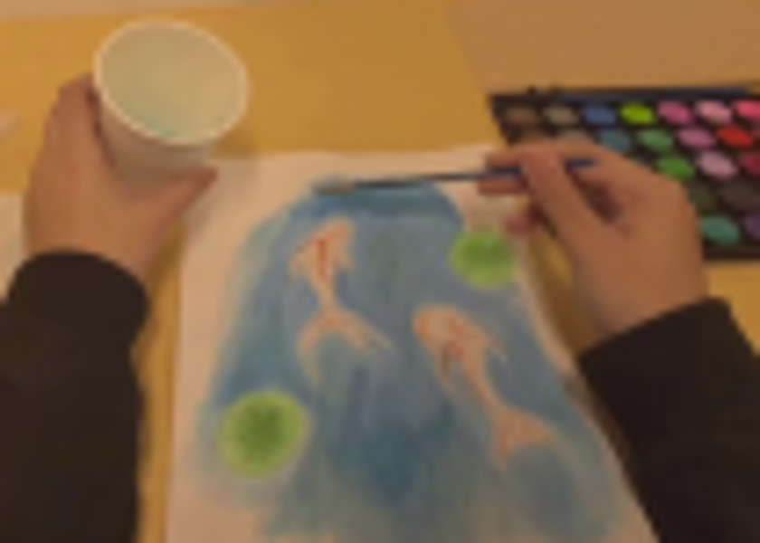
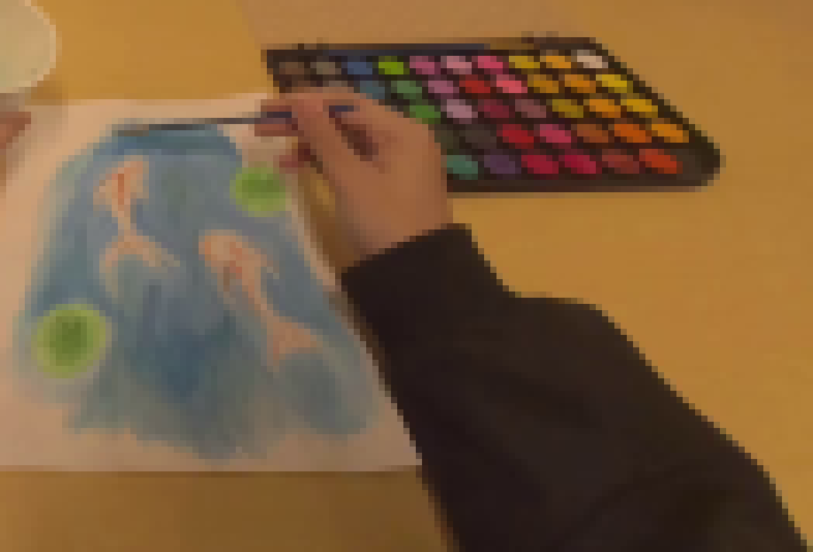
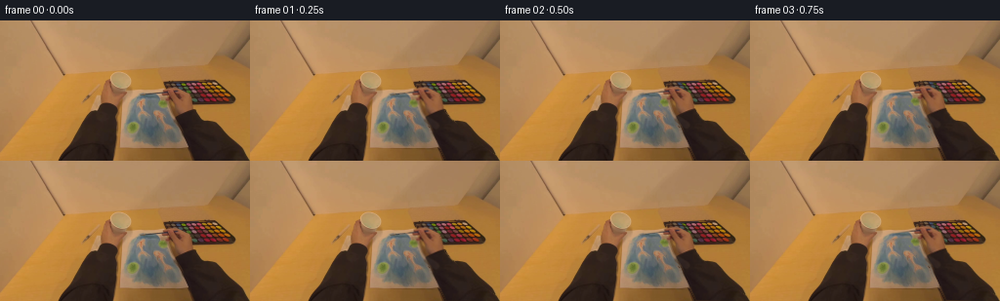
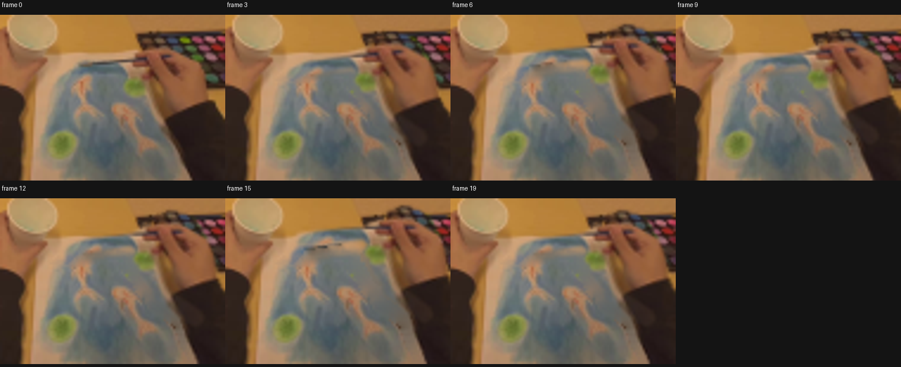

CODING AGENTS AS PIXEL WORLD MODELS
traex/GPT-5.6-Sol · common50_0017
点击播放 · 原生 RGB 像素
逐轮保存的候选
回放视频、检查图与代码变化。
每份候选均可单独播放。实际图片检查记录在下方工具轨迹中。
候选 01播放与检查图
点击播放 · 原生 RGB 像素

展开代码变化
--- 上一保存版本
+++ 本次保存版本
@@ -0,0 +1,139 @@
+from pathlib import Path
+import math
+import cv2
+import numpy as np
+from PIL import Image
+import artifact_io
+
+# PixelWorld deterministic, image-derived 2-D animation.
+HERE = Path(__file__).resolve().parent
+src_rgb = np.asarray(Image.open(HERE / "first_frame.png").convert("RGB"), dtype=np.uint8)
+h, w = src_rgb.shape[:2]
+src = cv2.cvtColor(src_rgb, cv2.COLOR_RGB2BGR)
+
+# Isolate the already-visible right arm, hand, and brush. The broad shape is
+# feathered, while narrow brush geometry is retained with a precise mask.
+mask = np.zeros((h, w), np.uint8)
+arm_hand = np.array([
+ [256,144],[201,144],[198,137],[194,130],[190,123],[186,115],
+ [183,106],[179,101],[173,98],[168,94],[165,89],[165,81],
+ [168,72],[171,66],[176,64],[182,65],[188,68],[191,73],
+ [194,78],[197,84],[198,92],[203,99],[212,107],[222,116],
+ [233,125],[246,135],[256,140]
+], np.int32)
+cv2.fillPoly(mask, [arm_hand], 255)
+# Fingers project left of the palm around the ferrule.
+cv2.ellipse(mask, (168,76), (8,5), -13, 0, 360, 255, -1, cv2.LINE_AA)
+cv2.ellipse(mask, (170,83), (8,4), -10, 0, 360, 255, -1, cv2.LINE_AA)
+# Existing blue paintbrush: tip around (137,81), shaft toward the gripping hand.
+cv2.line(mask, (134,82), (180,73), 255, 4, cv2.LINE_AA)
+# A little natural contact shadow travels with the hand.
+cv2.line(mask, (174,98), (190,108), 210, 5, cv2.LINE_AA)
+mask = cv2.GaussianBlur(mask, (3,3), .55)
+
+# Remove the source pose to get a clean plate. Almost all of this repair is
+# covered again; it only supplies the few pixels revealed along moving edges.
+solid = (mask > 45).astype(np.uint8) * 255
+clean = cv2.inpaint(src, solid, 5, cv2.INPAINT_TELEA)
+# Help the large inpainted lower-right area remain a plausible wooden desk.
+# Smooth only deep inside the masked region, leaving inferred boundaries intact.
+deep = cv2.erode(solid, np.ones((11,11),np.uint8), iterations=1)
+smooth = cv2.GaussianBlur(clean, (0,0), 5)
+clean[deep > 0] = smooth[deep > 0]
+
+# Shoulder/forearm anchor remains at the bottom edge. Clockwise swings lower
+# the bristles onto the blue field. Angles provide two deliberate short strokes.
+angles = np.array([
+ 0.0, -0.4, -1.0, -1.8, -2.8, -3.9, -5.0,
+ -4.3, -3.4, -2.6, -2.0,
+ -2.7, -3.6, -4.6, -5.6, -6.1,
+ -5.5, -4.7, -4.0, -3.5
+], dtype=np.float32)
+# Small wrist-led offsets prevent a mechanically perfect arc.
+offsets = [(0,0),(0,0),(0,0),(0,0),(-.2,.1),(-.3,.2),(-.4,.3),
+ (-.5,.1),(-.4,-.1),(-.2,-.2),(0,-.2),
+ (-.3,0),(-.6,.15),(-.9,.25),(-1.1,.35),(-1.2,.4),
+ (-1.0,.25),(-.7,.1),(-.4,0),(-.2,0)]
+pivot = np.array([238.0, 153.0], np.float32)
+tip0 = np.array([136.5,81.5], np.float32)
+
+def matrix_for(i):
+ a = math.radians(float(angles[i]))
+ c, s = math.cos(a), math.sin(a)
+ # standard image-coordinate affine matching cv2 getRotation convention
+ R = np.array([[c, s],[-s, c]], np.float32)
+ t = pivot - R @ pivot + np.array(offsets[i], np.float32)
+ return np.array([[R[0,0],R[0,1],t[0]],[R[1,0],R[1,1],t[1]]], np.float32)
+
+def map_point(M, p):
+ return M[:,:2] @ p + M[:,2]
+
+# Bristle positions for the whole sequence, used to accumulate real-looking
+# wet pigment underneath the hand/brush layer.
+tips = [map_point(matrix_for(i), tip0) for i in range(20)]
+
+# Keep pigment confined to the existing blue region: a hand-tuned paper mask
+# intersected with a permissive blue-pixel mask. This protects fish and lilies.
+yy, xx = np.mgrid[0:h,0:w]
+paper_poly = np.zeros((h,w),np.uint8)
+cv2.fillPoly(paper_poly,[np.array([[116,72],[164,61],[197,128],[127,132]],np.int32)],255)
+b,g,r = cv2.split(src)
+blueish = ((b.astype(int) > r.astype(int)+3) & (b.astype(int) > g.astype(int)-12) & (paper_poly>0)).astype(np.uint8)*255
+blueish = cv2.dilate(blueish,np.ones((5,5),np.uint8),iterations=1)
+allowed = cv2.bitwise_and(paper_poly, blueish)
+allowed = cv2.GaussianBlur(allowed,(5,5),1.0)
+
+frames = []
+for i in range(20):
+ if i == 0:
+ frames.append(src_rgb.copy())
+ continue
+
+ # Begin from the repaired scene, then progressively lay down watery blue.
+ bg = clean.copy()
+ paint_rgba = np.zeros((h,w,4),np.uint8)
+ # Pigment appears once the lowered bristles make contact (frame 2 onward).
+ if i >= 2:
+ # Draw the traced path through all positions reached so far. Layering a
+ # translucent broad wash, blue core and tiny specular edge implies wet paint.
+ pts = np.round(np.asarray(tips[1:i+1])).astype(np.int32)
+ wash = np.zeros((h,w),np.uint8)
+ core = np.zeros((h,w),np.uint8)
+ if len(pts) == 1:
+ cv2.circle(wash, tuple(pts[0]), 3, 150, -1, cv2.LINE_AA)
+ cv2.circle(core, tuple(pts[0]), 1, 210, -1, cv2.LINE_AA)
+ else:
+ cv2.polylines(wash,[pts],False,160,5,cv2.LINE_AA)
+ cv2.polylines(core,[pts],False,220,2,cv2.LINE_AA)
+ # Subtle parallel bristle track.
+ p2 = pts + np.array([1,1],np.int32)
+ if len(p2)>1: cv2.polylines(core,[p2],False,135,1,cv2.LINE_AA)
+ wash = cv2.GaussianBlur(wash,(5,5),.8)
+ wa = (wash.astype(np.float32) * (allowed.astype(np.float32)/255.0) / 255.0)[:,:,None]
+ ca = (core.astype(np.float32) * (allowed.astype(np.float32)/255.0) / 255.0)[:,:,None]
+ # Rich blue with a slightly cyan watery skirt.
+ bgf = bg.astype(np.float32)
+ wet_bgr = np.array([154,103,55],np.float32)
+ deep_bgr = np.array([142,83,37],np.float32)
+ bgf = bgf*(1-wa*.38) + wet_bgr*(wa*.38)
+ bgf = bgf*(1-ca*.48) + deep_bgr*(ca*.48)
+ bg = np.clip(bgf,0,255).astype(np.uint8)
+ # Pinpoint wet glint just behind the current bristles.
+ q = tuple(np.round(tips[i] + np.array([1.4,-.5])).astype(int))
+ gl = np.zeros((h,w),np.uint8); cv2.circle(gl,q,1,95,-1,cv2.LINE_AA)
+ gl = cv2.bitwise_and(gl, allowed)
+ bg[gl>0] = np.clip(bg[gl>0].astype(int) + np.array([12,8,3]),0,255)
+
+ M = matrix_for(i)
+ moved = cv2.warpAffine(src, M, (w,h), flags=cv2.INTER_CUBIC,
+ borderMode=cv2.BORDER_REFLECT_101)
+ moved_mask = cv2.warpAffine(mask, M, (w,h), flags=cv2.INTER_LINEAR,
+ borderMode=cv2.BORDER_CONSTANT, borderValue=0)
+ alpha = (moved_mask.astype(np.float32)/255.0)[:,:,None]
+ out = np.clip(bg.astype(np.float32)*(1-alpha) + moved.astype(np.float32)*alpha,0,255).astype(np.uint8)
+ frames.append(cv2.cvtColor(out, cv2.COLOR_BGR2RGB))
+
+frames = np.stack(frames).astype(np.uint8)
+assert frames.shape == (20,144,256,3)
+assert np.array_equal(frames[0], src_rgb)
+artifact_io.save(frames, HERE)
候选 02播放与检查图
点击播放 · 原生 RGB 像素

展开代码变化
--- 上一保存版本 +++ 本次保存版本 @@ -33,8 +33,11 @@ # Remove the source pose to get a clean plate. Almost all of this repair is # covered again; it only supplies the few pixels revealed along moving edges. -solid = (mask > 45).astype(np.uint8) * 255 -clean = cv2.inpaint(src, solid, 5, cv2.INPAINT_TELEA) +solid = (mask > 35).astype(np.uint8) * 255 +# Expand beyond the antialiased silhouette so no dark sleeve fringe remains +# behind when the forearm swings away from its starting pose. +solid = cv2.dilate(solid, np.ones((5,5), np.uint8), iterations=1) +clean = cv2.inpaint(src, solid, 6, cv2.INPAINT_TELEA) # Help the large inpainted lower-right area remain a plausible wooden desk. # Smooth only deep inside the masked region, leaving inferred boundaries intact. deep = cv2.erode(solid, np.ones((11,11),np.uint8), iterations=1)
候选 03播放与检查图
可观测工具轨迹
实际执行的命令与返回图片。
命令 1exit 0
/bin/bash -lc "cat prompt.txt && printf '\\n---RULES---\\n' && cat GENERATION_RULES.md"
命令 2exit 1
/bin/bash -lc "find . -maxdepth 2 -type f -printf '%p\\n' | sort && printf '\\n---TOOLS---\\n' && command -v ffmpeg && command -v python3 && python3 - <<'PY'
try:
import cv2; print('cv2',cv2.__version__)
except Exception as e: print('no cv2',e)
try:
from PIL import Image; print('PIL ok')
except Exception as e: print('no PIL',e)
PY"命令 3exit 0
/bin/bash -lc "cat task_spec.json; printf '\\n---artifact_io---\\n'; sed -n '1,240p' artifact_io.py"
命令 4exit 0
/bin/bash -lc "command -v python3 || true; command -v ffmpeg || true; python3 - <<'PY' import sys print(sys.version) for x in ['numpy','PIL','cv2','imageio']: try: m=__import__(x); print(x,'ok',getattr(m,'__version__','')) except Exception as e: print(x,'NO',e) PY"
命令 5exit 0
/bin/bash -lc "python3 - <<'PY'
from PIL import Image
im=Image.open('first_frame.png')
im.crop((100,50,205,125)).resize((840,600)).save('.tmp/crop.png')
PY"命令 6exit 0
/bin/bash -lc "python3 - <<'PY'
from PIL import Image
im=Image.open('first_frame.png')
im.crop((125,55,256,144)).resize((1048,712),resample=Image.Resampling.NEAREST).save('.tmp/right_nearest.png')
PY"命令 7exit 0
/bin/bash -lc "cat > generate.py <<'PY'
from pathlib import Path
import math
import cv2
import numpy as np
from PIL import Image
import artifact_io
# PixelWorld deterministic, image-derived 2-D animation.
HERE = Path(__file__).resolve().parent
src_rgb = np.asarray(Image.open(HERE / \"first_frame.png\").convert(\"RGB\"), dtype=np.uint8)
h, w = src_rgb.shape[:2]
src = cv2.cvtColor(src_rgb, cv2.COLOR_RGB2BGR)
# Isolate the already-visible right arm, hand, and brush. The broad shape is
# feathered, while narrow brush geometry is retained with a precise mask.
mask = np.zeros((h, w), np.uint8)
arm_hand = np.array([
[256,144],[201,144],[198,137],[194,130],[190,123],[186,115],
[183,106],[179,101],[173,98],[168,94],[165,89],[165,81],
[168,72],[171,66],[176,64],[182,65],[188,68],[191,73],
[194,78],[197,84],[198,92],[203,99],[212,107],[222,116],
[233,125],[246,135],[256,140]
], np.int32)
cv2.fillPoly(mask, [arm_hand], 255)
# Fingers project left of the palm around the ferrule.
cv2.ellipse(mask, (168,76), (8,5), -13, 0, 360, 255, -1, cv2.LINE_AA)
cv2.ellipse(mask, (170,83), (8,4), -10, 0, 360, 255, -1, cv2.LINE_AA)
# Existing blue paintbrush: tip around (137,81), shaft toward the gripping hand.
cv2.line(mask, (134,82), (180,73), 255, 4, cv2.LINE_AA)
# A little natural contact shadow travels with the hand.
cv2.line(mask, (174,98), (190,108), 210, 5, cv2.LINE_AA)
mask = cv2.GaussianBlur(mask, (3,3), .55)
# Remove the source pose to get a clean plate. Almost all of this repair is
# covered again; it only supplies the few pixels revealed along moving edges.
solid = (mask > 45).astype(np.uint8) * 255
clean = cv2.inpaint(src, solid, 5, cv2.INPAINT_TELEA)
# Help the large inpainted lower-right area remain a plausible wooden desk.
# Smooth only deep inside the masked region, leaving inferred boundaries intact.
deep = cv2.erode(solid, np.ones((11,11),np.uint8), iterations=1)
smooth = cv2.GaussianBlur(clean, (0,0), 5)
clean[deep > 0] = smooth[deep > 0]
# Shoulder/forearm anchor remains at the bottom edge. Clockwise swings lower
# the bristles onto the blue field. Angles provide two deliberate short strokes.
angles = np.array([
0.0, -0.4, -1.0, -1.8, -2.8, -3.9, -5.0,
-4.3, -3.4, -2.6, -2.0,
-2.7, -3.6, -4.6, -5.6, -6.1,
-5.5, -4.7, -4.0, -3.5
], dtype=np.float32)
# Small wrist-led offsets prevent a mechanically perfect arc.
offsets = [(0,0),(0,0),(0,0),(0,0),(-.2,.1),(-.3,.2),(-.4,.3),
(-.5,.1),(-.4,-.1),(-.2,-.2),(0,-.2),
(-.3,0),(-.6,.15),(-.9,.25),(-1.1,.35),(-1.2,.4),
(-1.0,.25),(-.7,.1),(-.4,0),(-.2,0)]
pivot = np.array([238.0, 153.0], np.float32)
tip0 = np.array([136.5,81.5], np.float32)
def matrix_for(i):
a = math.radians(float(angles[i]))
c, s = math.cos(a), math.sin(a)
# standard image-coordinate affine matching cv2 getRotation convention
R = np.array([[c, s],[-s, c]], np.float32)
t = pivot - R @ pivot + np.array(offsets[i], np.float32)
return np.array([[R[0,0],R[0,1],t[0]],[R[1,0],R[1,1],t[1]]], np.float32)
def map_point(M, p):
return M[:,:2] @ p + M[:,2]
# Bristle positions for the whole sequence, used to accumulate real-looking
# wet pigment underneath the hand/brush layer.
tips = [map_point(matrix_for(i), tip0) for i in range(20)]
# Keep pigment confined to the existing blue region: a hand-tuned paper mask
# intersected with a permissive blue-pixel mask. This protects fish and lilies.
yy, xx = np.mgrid[0:h,0:w]
paper_poly = np.zeros((h,w),np.uint8)
cv2.fillPoly(paper_poly,[np.array([[116,72],[164,61],[197,128],[127,132]],np.int32)],255)
b,g,r = cv2.split(src)
blueish = ((b.astype(int) > r.astype(int)+3) & (b.astype(int) > g.astype(int)-12) & (paper_poly>0)).astype(np.uint8)*255
blueish = cv2.dilate(blueish,np.ones((5,5),np.uint8),iterations=1)
allowed = cv2.bitwise_and(paper_poly, blueish)
allowed = cv2.GaussianBlur(allowed,(5,5),1.0)
frames = []
for i in range(20):
if i == 0:
frames.append(src_rgb.copy())
continue
# Begin from the repaired scene, then progressively lay down watery blue.
bg = clean.copy()
paint_rgba = np.zeros((h,w,4),np.uint8)
# Pigment appears once the lowered bristles make contact (frame 2 onward).
if i >= 2:
# Draw the traced path through all positions reached so far. Layering a
# translucent broad wash, blue core and tiny specular edge implies wet paint.
pts = np.round(np.asarray(tips[1:i+1])).astype(np.int32)
wash = np.zeros((h,w),np.uint8)
core = np.zeros((h,w),np.uint8)
if len(pts) == 1:
cv2.circle(wash, tuple(pts[0]), 3, 150, -1, cv2.LINE_AA)
cv2.circle(core, tuple(pts[0]), 1, 210, -1, cv2.LINE_AA)
else:
cv2.polylines(wash,[pts],False,160,5,cv2.LINE_AA)
cv2.polylines(core,[pts],False,220,2,cv2.LINE_AA)
# Subtle parallel bristle track.
p2 = pts + np.array([1,1],np.int32)
if len(p2)>1: cv2.polylines(core,[p2],False,135,1,cv2.LINE_AA)
wash = cv2.GaussianBlur(wash,(5,5),.8)
wa = (wash.astype(np.float32) * (allowed.astype(np.float32)/255.0) / 255.0)[:,:,None]
ca = (core.astype(np.float32) * (allowed.astype(np.float32)/255.0) / 255.0)[:,:,None]
# Rich blue with a slightly cyan watery skirt.
bgf = bg.astype(np.float32)
wet_bgr = np.array([154,103,55],np.float32)
deep_bgr = np.array([142,83,37],np.float32)
bgf = bgf*(1-wa*.38) + wet_bgr*(wa*.38)
bgf = bgf*(1-ca*.48) + deep_bgr*(ca*.48)
bg = np.clip(bgf,0,255).astype(np.uint8)
# Pinpoint wet glint just behind the current bristles.
q = tuple(np.round(tips[i] + np.array([1.4,-.5])).astype(int))
gl = np.zeros((h,w),np.uint8); cv2.circle(gl,q,1,95,-1,cv2.LINE_AA)
gl = cv2.bitwise_and(gl, allowed)
bg[gl>0] = np.clip(bg[gl>0].astype(int) + np.array([12,8,3]),0,255)
M = matrix_for(i)
moved = cv2.warpAffine(src, M, (w,h), flags=cv2.INTER_CUBIC,
borderMode=cv2.BORDER_REFLECT_101)
moved_mask = cv2.warpAffine(mask, M, (w,h), flags=cv2.INTER_LINEAR,
borderMode=cv2.BORDER_CONSTANT, borderValue=0)
alpha = (moved_mask.astype(np.float32)/255.0)[:,:,None]
out = np.clip(bg.astype(np.float32)*(1-alpha) + moved.astype(np.float32)*alpha,0,255).astype(np.uint8)
frames.append(cv2.cvtColor(out, cv2.COLOR_BGR2RGB))
frames = np.stack(frames).astype(np.uint8)
assert frames.shape == (20,144,256,3)
assert np.array_equal(frames[0], src_rgb)
artifact_io.save(frames, HERE)
PY
python3 generate.py"命令 8exit 0
/bin/bash -lc "python3 - <<'PY'
import cv2, numpy as np
from PIL import Image,ImageDraw
ims=[]
for i in [0,3,6,9,12,15,19]:
im=Image.open(f'frames/{i:02d}.png').crop((110,55,205,125)).resize((380,280))
ims.append(im)
out=Image.new('RGB',(380*4,310*2),(20,20,20)); d=ImageDraw.Draw(out)
for k,(i,im) in enumerate(zip([0,3,6,9,12,15,19],ims)):
x=(k%4)*380;y=(k//4)*310; d.text((x+3,y+2),f'frame {i}',fill='white');out.paste(im,(x,y+25))
out.save('.tmp/zoom_sheet.png')
PY"命令 9exit 0
/bin/bash -lc "python3 generate.py && python3 - <<'PY'
import numpy as np
from PIL import Image
z=np.load('pixels.npz')['pixels']
im=np.array(Image.open('first_frame.png').convert('RGB')); p=(im[:,:,0].astype(np.uint32)<<16)|(im[:,:,1].astype(np.uint32)<<8)|im[:,:,2]
print('shape',z.shape,'dtype',z.dtype,'frame0 exact',np.array_equal(z[:,:,0],p),'frames',len(list(__import__('pathlib').Path('frames').glob('*.png'))))
PY"视觉工具实际返回图片 1

视觉工具实际返回图片 2

视觉工具实际返回图片 3

视觉工具实际返回图片 4

视觉工具实际返回图片 5

视觉工具实际返回图片 6

保存候选 3 份；完成命令 9 次；可验证图片返回 6 张。原始 API 响应与完整日志保留在本地。